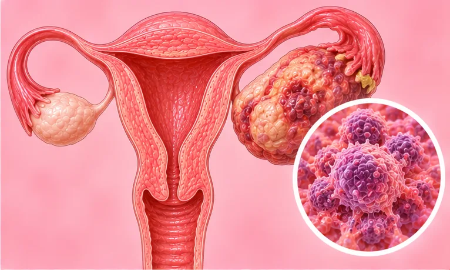

Kanser ovari keturunan
Kanser ovari yang berlaku dalam keluarga akibat perubahan gen keturunan
Apa itu
Kanser ovari keturunan ialah kanser ovari yang berkaitan dengan perubahan gen yang diwarisi dalam keluarga. Tanda awal selalunya ringan dan mudah terlepas pandang.
- Ovari, perut bawah
- Berlaku dalam keluarga
- Perut kembung, sakit perut
- Jumpa doktor
- Doktor kanser wanita (pakar onkologi ginekologi), kaunselor genetik
- Biasa pada
- Wanita yang saudara terdekatnya pernah menghidap kanser ovari atau payudara
- Berjangkit
- Tidak, tetapi perubahan gen boleh diwarisi oleh anak-anak
- Perjalanan
- Bergantung pada seawal mana ia dikesan; pasukan penjagaan anda boleh menerangkan jangkaan
Tanda biasa

Perut bengkak dan tegangDistensi abdomen 
Rasa berat dan sakit di perut bawahSakit pelvis 
Tiada selera makanHilang selera makan 
Kerap ke tandasKekerapan kencing 
Letih sepanjang masaKeletihan
Mengapa ia berlaku

Diwarisi dalam keluargaKecenderungan genetik 
Peningkatan usiaPenuaan 
Punca belum diketahui sepenuhnyaIdiopatik
Punca lain
- Beberapa saudara terdekat menghidap kanser ovari atau payudara
Jumpa doktor dahulu jika
- Sakit perut teruk, pengsan atau sukar bernafas: ke hospital segera
- Perut kembung atau bengkak yang berlanjutan lebih daripada beberapa minggu
- Pendarahan faraj selepas putus haid, atau pendarahan banyak yang tidak biasa
- Berat badan turun tanpa sebab
- Cepat kenyang, atau sakit pelvis baharu yang kerap berulang
Jika mana-mana berkenaan, sila jumpa doktor sebelum sesi.
Halaman ini ialah maklumat am. Sila terus mengambil ubat biasa anda dan terus berjumpa doktor.
Teruskan mengambil ubat biasa anda dan terus berjumpa doktor. Sesi kami ialah sokongan lembut dan tidak menggantikan rawatan perubatan.
Menjaga diri

Jumpa doktor untuk pemeriksaanSusulan perubatan berkala 
Makan sedikit dan kerapMakan kecil kerap
Lebih banyak cara menjaga diri
- Jangan hentikan rawatan sendiri; tanya pasukan anda tentang sakit, pemakanan dan keletihan
- Tanya tentang kaunseling genetik untuk diri dan saudara anda
- Tanya tentang sokongan emosi; anda tidak perlu menghadapinya seorang diri
Beritahu ahli terapi anda
- Kanser atau rawatan kanser
- Kehamilan
- Ubat pencair darah
- Tulang lemah
Ahli terapi anda akan menyemaknya bersama anda sebelum bermula.
Keadaan berkaitan
Rujukan: General information based on public health sources such as Mayo Clinic, NHS, Cleveland Clinic and NCBI StatPearls.
Halaman dikemas kini: 2026-10-31